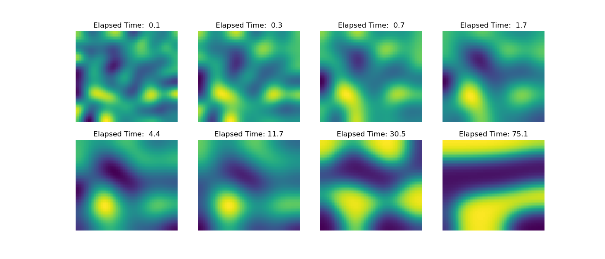

Note
Go to the end to download the full example code
Operators: Cahn Hilliard#
This example is based on the example in the FiPy library. Please see their documentation for more information about the Cahn-Hilliard equation.
The “Cahn-Hilliard” equation separates a field \(\phi\) into 0 and 1 with smooth transitions.
Where \(f\) is the energy function \(f = ( a^2 / 2 )\phi^2(1 - \phi)^2\) which drives \(\phi\) towards either 0 or 1, this competes with the term \(\epsilon^2 \nabla^2 \phi\) which is a diffusion term that creates smooth changes in \(\phi\). The equation can be factored:
Here we will need the derivatives of \(f\):
The implementation below uses backwards Euler in time with an exponentially increasing time step. The initial \(\phi\) is a normally distributed field with a standard deviation of 0.1 and mean of 0.5. The grid is 60x60 and takes a few seconds to solve ~130 times. The results are seen below, and you can see the field separating as the time increases.
0 0.006737946999085467
10 0.09636267449939614
20 0.24412886910986079
30 0.4877541372545481
40 0.8894242989247158
50 1.5516664382758794
60 2.643519139778099
70 4.443679913216204
80 7.411643271063607
90 12.304987589805195
100 20.37274845297408
110 33.67423739500265
120 55.604685145707705
import discretize
from pymatsolver import Solver
import numpy as np
import matplotlib.pyplot as plt
def run(plotIt=True, n=60):
np.random.seed(5)
# Here we are going to rearrange the equations:
# (phi_ - phi)/dt = A*(d2fdphi2*(phi_ - phi) + dfdphi - L*phi_)
# (phi_ - phi)/dt = A*(d2fdphi2*phi_ - d2fdphi2*phi + dfdphi - L*phi_)
# (phi_ - phi)/dt = A*d2fdphi2*phi_ + A*( - d2fdphi2*phi + dfdphi - L*phi_)
# phi_ - phi = dt*A*d2fdphi2*phi_ + dt*A*(- d2fdphi2*phi + dfdphi - L*phi_)
# phi_ - dt*A*d2fdphi2 * phi_ = dt*A*(- d2fdphi2*phi + dfdphi - L*phi_) + phi
# (I - dt*A*d2fdphi2) * phi_ = dt*A*(- d2fdphi2*phi + dfdphi - L*phi_) + phi
# (I - dt*A*d2fdphi2) * phi_ = dt*A*dfdphi - dt*A*d2fdphi2*phi - dt*A*L*phi_ + phi
# (dt*A*d2fdphi2 - I) * phi_ = dt*A*d2fdphi2*phi + dt*A*L*phi_ - phi - dt*A*dfdphi
# (dt*A*d2fdphi2 - I - dt*A*L) * phi_ = (dt*A*d2fdphi2 - I)*phi - dt*A*dfdphi
h = [(0.25, n)]
M = discretize.TensorMesh([h, h])
# Constants
D = a = epsilon = 1.0
I = discretize.utils.speye(M.nC)
# Operators
A = D * M.face_divergence * M.cell_gradient
L = epsilon**2 * M.face_divergence * M.cell_gradient
duration = 75
elapsed = 0.0
dexp = -5
phi = np.random.normal(loc=0.5, scale=0.01, size=M.nC)
ii, jj = 0, 0
PHIS = []
capture = np.logspace(-1, np.log10(duration), 8)
while elapsed < duration:
dt = min(100, np.exp(dexp))
elapsed += dt
dexp += 0.05
dfdphi = a**2 * 2 * phi * (1 - phi) * (1 - 2 * phi)
d2fdphi2 = discretize.utils.sdiag(a**2 * 2 * (1 - 6 * phi * (1 - phi)))
MAT = dt * A * d2fdphi2 - I - dt * A * L
rhs = (dt * A * d2fdphi2 - I) * phi - dt * A * dfdphi
phi = Solver(MAT) * rhs
if elapsed > capture[jj]:
PHIS += [(elapsed, phi.copy())]
jj += 1
if ii % 10 == 0:
print(ii, elapsed)
ii += 1
if plotIt:
fig, axes = plt.subplots(2, 4, figsize=(14, 6))
axes = np.array(axes).flatten().tolist()
for ii, ax in zip(np.linspace(0, len(PHIS) - 1, len(axes)), axes):
ii = int(ii)
M.plot_image(PHIS[ii][1], ax=ax)
ax.axis("off")
ax.set_title("Elapsed Time: {0:4.1f}".format(PHIS[ii][0]))
if __name__ == "__main__":
run()
plt.show()
Total running time of the script: ( 0 minutes 4.932 seconds)